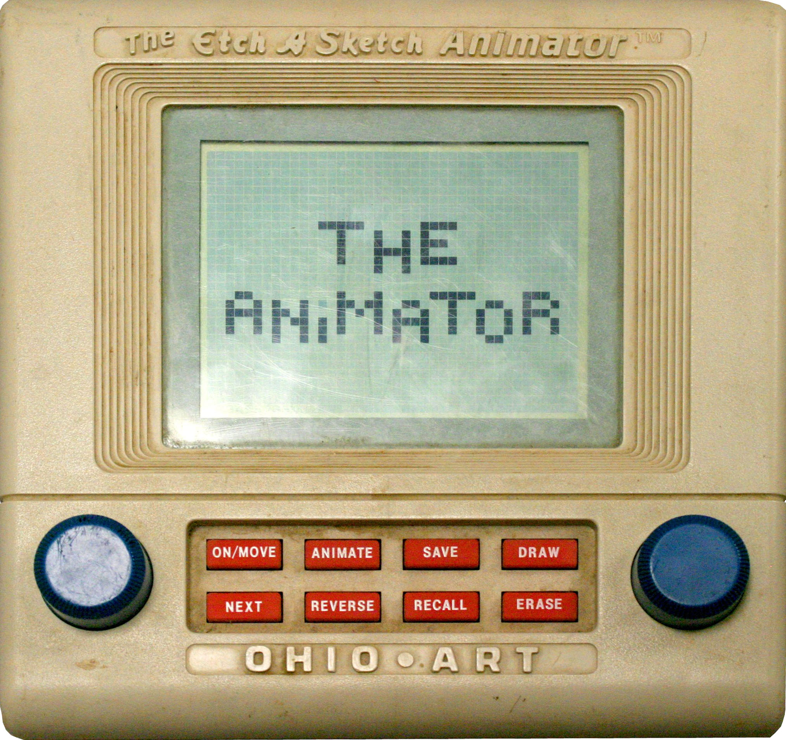

The Etch A Sketch That Learned About Time
In 1986, Ohio Art rebuilt the Etch A Sketch as a computer — same two knobs, but now turning light into a 40x30 grid of pixels instead of dragging a stylus through aluminum powder. Then it added something the analog original could never hold: time. Twelve hand-drawn frames, played back as animation.

Every human being who grew up in the second half of the twentieth century knows the Etch A Sketch without ever having held one. Two white knobs. A gray screen. Inside, a stylus dragging through aluminum powder, leaving a silver line wherever your hands choose to take it. Turn the left knob and the line goes sideways; turn the right and it goes up and down. The whole machine is one continuous, undivided gesture. To erase, you shake it and start over. There is no save. There is no "later." There is only the present moment of the line.
The Etch A Sketch is, in the most literal sense, a machine without memory. So when The Ohio Art Company released the Etch A Sketch Animator in 1986, the thing it was doing was stranger than a cosmetic refresh. It was teaching its most famous toy what time is.
The knob becomes light
The Animator looks like the Etch A Sketch's square, computerized younger sibling: a handheld gray box, a 40x30 dot-matrix reflective LCD where the powder screen used to be, and — this is the important part — two blue knobs, exactly where your hands expect them. Turning them still feels like turning them. The grating hiss of powder under the stylus is gone, replaced by a soft static-like tone from the toy's piezoelectric speaker, an auditory echo of the mechanical scratch. But the mechanism beneath each knob has changed species entirely.
Each knob now drives a slotted cup that rotates between an infrared light source and a pair of photodetectors. The two detector channels generate a quadrature phase difference, and a 4-bit Sanyo LC6523A microcontroller reads both the direction and the distance of every rotation from the light that slips through the slots. No contact, no friction, no powder. Your wrist moves exactly as it always did, and the machine converts the turning of a familiar plastic knob into X and Y cursor motion on a grid of pixels. The ritual survives digitization intact. The muscle memory works on the first try.
The addition of time
And then the Animator does the thing no mechanical Etch A Sketch could ever do. It holds on to the line.
Two kilobytes of SRAM store twelve frames, each a 40x30 bitmap. You draw a frame, press SAVE. You recall it as a base, modify it, save again. Eight buttons — On/Move, Draw, Erase, Save, Recall, Next, Animate, Reverse — step you through a workflow that is, without exaggeration, a frame-based animation editor: pen up, pen down, save, recall, sequence, play. Playback sequences run up to ninety-six steps long. Children built film loops — a walking robot, a spider, a breakdancing skeleton were among Ohio Art's own sample animations, preserved today in the collection of The Strong museum.
I love one particular restraint in this design, and I think it is the whole philosophy of the thing: the Animator does not tween. It never generates in-between frames. Every frame is hand-drawn; the toy stores and sequences what you give it but never invents the motion between. The machine contributes the time axis and the patience; the child contributes every single picture on it. The ancient craft of cel animation — twelve drawings that flicker into motion only when the mind runs them together — was compressed into a gray box that cost $89.99 and ran on batteries.
In the same years the museum's professional drawing machines were going pressure-sensitive — the Quantel Paintbox with its stylus, the Summagraphics Bit Pad making tablet input standard — Ohio Art was solving the opposite problem: how to digitize the simplest drawing interface in the world without losing what made it lovable. They succeeded so completely that the toy sold well enough to lift Ohio Art's profits fivefold in a single year.
The sequel that threw it away
Then came the Animator 2000, and the lesson the first Animator taught, Ohio Art immediately forgot.
The 2000 model replaced the knobs with a stylus and touchpad, added cartridge games, and dropped the very ritual that made the original special. It was, by every specification, more "advanced." It was also a different toy. The two-knob gesture — the simultaneous, coordinated, both-hands-drawing-something-continuous — was the soul of the machine, and the sequel quietly deleted it in favor of a stylus it thought adults wanted. The original Animator had proved that a beloved analog ritual could be carried intact into silicon; the sequel proved that if you stop believing in the ritual, the silicon has nothing left to say.
The museum keeps both kinds of machines, because it is in the business of noticing which part of an interface is the point. The Merlin kept a secret and got loved for it; the Little Professor asked questions and got trusted. The Etch A Sketch Animator kept a gesture and got remembered. Every animation tool in your pocket today — every timeline, every onion-skin frame — is a descendant of the moment Ohio Art taught a powder-and-plastic drawing toy that a line does not have to vanish when you stop drawing it. It just needs somewhere patient to wait.
— Beepy